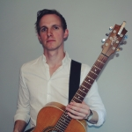
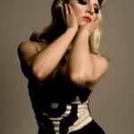
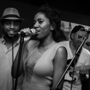
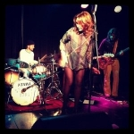
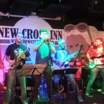

Current Projects
I am currently taking a sabbatical from day-job world to give myself time to focus on music and other projects. I'm writing and recording my own music, which I will gradually release into the wild when I'm happy with it.
I recently played on a three-track EP for singer/songwriter Lewis Foreman and will be playing in his live band to support the release.
I'm playing with singer/songwriter Angie Porter on her live project.
I played with jazz/soul band Soulmaze at several London festivals over the summer, and in a live studio session at the London School of Sound earlier in the year. I will be playing with them again in 2016.
I frequently gig with Midlands-based jazz/funk/psychedelic band Snooty Bobs.
I still play with ska/punk covers super-group extraordinaire Less Than A Real Big Gold Fish Finger, which was put together for a one-off, never-to-be-repeated show at an event in Portugal in 2013. We played our seventh and eighth gigs in December, and have more planned for 2016.
    